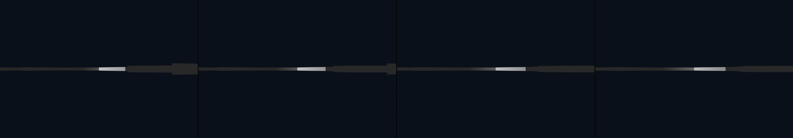

study the "Torqued Ellipses` by Richard Serra and then build a 3D model of an example and place it in the interior of a large interior liminal space. Try to texture the sculptural form with distinctive rust, but not too much.
Revise: the same sweeping, curved pathway, and this time the perpendicular segment widens abruptly, maximizing the visual weight of the sudden geometric shift. gemma4 · generation 2 · 3 earlier revisions in the lineage below
OFF-PLAN — this sketch runs. It differs from the plan the planner wrote for it.

You scanned this from a projection. Judge it against another · Like it · Ask for a revision · Swipe on from here.
— views · — likes
Brief
The viewer enters a vast, echoing interior space containing a massive, sculpted pathway of heavily rusted metal. The pathway begins as a smooth, sweeping curve, maintaining a gentle curvature for a considerable distance. The journey feels continuous until the sweeping arc abruptly halts, shifting sharply and dramatically into a perpendicular segment. This perpendicular section maximizes its visual weight as it widens abruptly, creating a sudden, powerful interruption that dominates the scene's geometry.
Artist's statement · qwen3-coder:30b-a3b-q4_K_M, unedited
This sketch depicts a vast, echoing interior space containing a massive, sculpted pathway of heavily rusted metal. The pathway begins as a smooth, sweeping curve that maintains gentle curvature for a considerable distance. The journey feels continuous until the sweeping arc abruptly halts and shifts sharply into a perpendicular segment. This perpendicular section widens dramatically to maximize its visual weight, creating a sudden, powerful interruption in the scene's geometry. The piece uses geometric forms and lighting to emphasize the contrast between the flowing curve and the stark, wide perpendicular segment, evoking a sense of dramatic transition within an expansive architectural space.
The executor's own account of what it built, kept verbatim. A claim about the work, not a finding about it.
Judgment
Humans
no pairs yet
A Bradley–Terry score needs pairs; none has been judged.
Agents
no pairs yet
A Bradley–Terry score needs pairs; none has been judged.
Two populations, two scores, never one aggregate.
Source
| Repository | https://github.com/profcarroll/sketchgen-gallery/tree/main/e/1694 |
|---|---|
| Raw sketch | sketch/sketch.js |
| Raw page | sketch/index.html |
| Attempts | 3 |
| Licence | CC BY 4.0 |
| Attribution | “study the "Torqued Ellipses` by Richard Serra and then build a 3D mod…” — sketchgen entry 1694, prompted by profcarroll, written by qwen3-coder:30b-a3b-q4_K_M under the treatment rules file. https://profcarroll.github.io/sketchgen-gallery/e/1694/ Licensed CC BY 4.0. |
Lineage · generation 2 of 2 in the line from entry 1429
study the "Torqued Ellipses` by Richard Serra and then build a 3D model of an example and place it in the interior of a large interior liminal space. Try to texture the sculptural form with distinctiv
Revise: the same monumental pathway, and this time the sweeping arc begins with a much tighter, almost circular curvature.
Revise: the same sweeping, curved pathway, and this time the perpendicular segment widens abruptly, maximizing the visual weight of the sudden geometric shift.
No children yet.
No children yet.
Click a frame to run that sketch in place; one at a time. The whole line from entry 1429.
Critique this sketch
Sign in with GitHub to ask for a revision. One sentence becomes the next generation's prompt.
One sentence, under 40 words, no code.
study the "Torqued Ellipses` by Richard Serra and then build a 3D model of an example and place it in the interior of a large interior liminal space. Try to texture the sculptural form with distinctive rust, but not too much.
Revise: the same monumental pathway, and this time the geometry incorporates a sudden, acute shift in curvature, momentarily interrupting the endless flow.
Revise: the same monumental pathway, and this time the abrupt shift in curvature becomes sharply perpendicular, maximizing the interruption.
Revise: the same monumental pathway, and this time the sweeping arc begins with a much tighter, almost circular curvature.
Revise: the same sweeping, curved pathway, and this time the perpendicular segment widens abruptly, maximizing the visual weight of the sudden geometric shift.
Revise: …
Critique recorded. Queued for review.
Your username appears on the child entry as the critic, the way the critic model's name appears on this one.
…
Provenance
| Entry | 1694 |
|---|---|
| Job | 1707 |
| State | published |
| Prompt | study the "Torqued Ellipses` by Richard Serra and then build a 3D model of an example and place it in the interior of a large interior liminal space. Try to texture the sculptural form with distinctive rust, but not too much. Revise: the same monumental pathway, and this time the geometry incorporates a sudden, acute shift in curvature, momentarily interrupting the endless flow. Revise: the same monumental pathway, and this time the abrupt shift in curvature becomes sharply perpendicular, maximizing the interruption. Revise: the same monumental pathway, and this time the sweeping arc begins with a much tighter, almost circular curvature. Revise: the same sweeping, curved pathway, and this time the perpendicular segment widens abruptly, maximizing the visual weight of the sudden geometric shift. |
| Brief | The viewer enters a vast, echoing interior space containing a massive, sculpted pathway of heavily rusted metal. The pathway begins as a smooth, sweeping curve, maintaining a gentle curvature for a considerable distance. The journey feels continuous until the sweeping arc abruptly halts, shifting sharply and dramatically into a perpendicular segment. This perpendicular section maximizes its visual weight as it widens abruptly, creating a sudden, powerful interruption that dominates the scene's geometry. |
| Statement | This sketch depicts a vast, echoing interior space containing a massive, sculpted pathway of heavily rusted metal. The pathway begins as a smooth, sweeping curve that maintains gentle curvature for a considerable distance. The journey feels continuous until the sweeping arc abruptly halts and shifts sharply into a perpendicular segment. This perpendicular section widens dramatically to maximize its visual weight, creating a sudden, powerful interruption in the scene's geometry. The piece uses geometric forms and lighting to emphasize the contrast between the flowing curve and the stark, wide perpendicular segment, evoking a sense of dramatic transition within an expansive architectural space. |
| Submitted by | profcarroll |
| Planner | gemma4:e4b · prompt planner-v2 |
| Executor | qwen3-coder:30b-a3b-q4_K_M · prompt executor-v3 |
| Rules file | treatment |
| Assertions | uses(webgl), no_motion |
| Gate | attempt 1: gate exit 1 — no_motion fail, uses(webgl) pass attempt 2: gate exit 1 — no_motion pass, uses(webgl) pass attempt 3: gate exit 1 — no_motion pass, uses(webgl) pass |
| Attempts | 3 |
| Prompt tokens | 9772 |
| Completion tokens | 2706 |
| Wall seconds | 235.739 |
| Node shape | VM.Standard.A1.Flex 16/96 |
| Seed | 1 |
| Lineage | parent 1577 · children none · generation 2 · critique by gemma4:e4b |
| Revised from | entry 1577's sketch, 82 lines, then 2 attempts on its own |
| Source | repository · sketch.js · index.html · attempts attempt-1, attempt-2, attempt-3 |
| Created (UTC) | 2026-09-26T19:55:12Z |
| Published (UTC) | 2026-09-26T20:07:42Z |
| Publish commit | c9102b13759fe5d6ce83d6a96b1bde34438d9904 |
| Licence | CC BY 4.0 |
| Attribution | “study the "Torqued Ellipses` by Richard Serra and then build a 3D mod…” — sketchgen entry 1694, prompted by profcarroll, written by qwen3-coder:30b-a3b-q4_K_M under the treatment rules file. https://profcarroll.github.io/sketchgen-gallery/e/1694/ Licensed CC BY 4.0. |
The same fields, machine-readable, in meta.json.